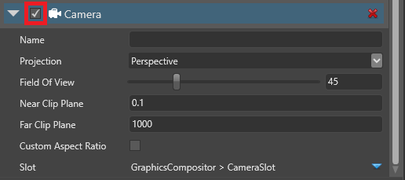
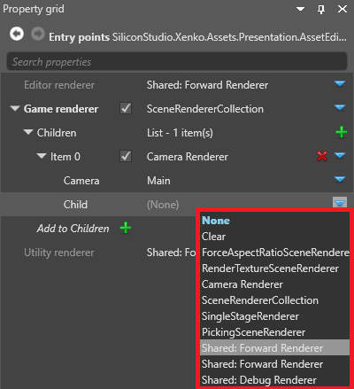
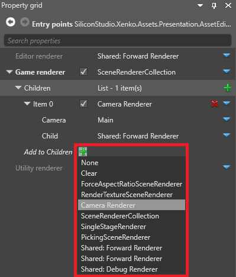
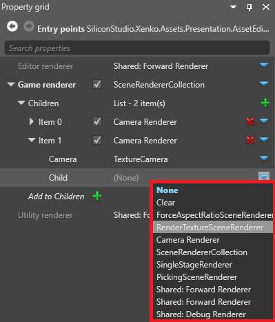

レンダーテクスチャー
中級 デザイナー プログラマー
レンダーテクスチャーを使うと、カメラのビューをテクスチャーに送り、そのテクスチャーをシーン内のオブジェクトに適用することができます。例えば、防犯カメラの映像のように、同じシーン内のテレビ画面にシーンの一部を映すことができます。
API の詳細については、テクスチャーとレンダーテクスチャーを参照してください。
1. 追加のカメラスロットを作成する
カメラスロットは、グラフィックスコンポジターをシーン内のカメラに結びつけるために使われます。新しいカメラを使うには、まずカメラスロットを追加する必要があります。カメラスロットの詳細については、カメラ スロットを参照してください。
アセットビューで、グラフィックスコンポジターアセットをダブルクリックします。

すると、グラフィックスコンポジターエディターが開きます。

左ペインの Camera slots の横にある
 （追加）をクリックします。
（追加）をクリックします。
Game Studio は、新しいカメラスロットを追加します。
Tip
カメラスロットの名前を変更するには、Camera slots 内のカメラスロットをダブルクリックして、新しい名前を入力します。
2. カメラを作成しスロットにバインドする
シーンで、カメラにするエンティティにカメラコンポーネントを追加します。
テクスチャーにレンダリングしたい範囲がカメラに映るように、エンティティを配置します。
プロパティグリッドで、カメラコンポーネントにチェックを入れて有効化します。

カメラコンポーネントの Slot プロパティで、前の手順で追加したカメラスロットを選択します。

3. レンダーターゲットテクスチャーを作成する
アセットビューで、[Add asset] をクリックし、Texture > Render target を選択します。

Game Studio は、プロジェクトのアセットにレンダーターゲットテクスチャーを追加します。

4. レンダーターゲットテクスチャーをシーンに配置する
レンダーターゲットテクスチャーには、いろいろな使い方があります。
例 1：レンダーターゲットテクスチャーをマテリアルで使用する
マテリアルを選択し、プロパティグリッドで Shading > Diffuse map の横にある
 （置換）をクリックし、Texture を選択します。
（置換）をクリックし、Texture を選択します。 （アセットの選択）をクリックします。
（アセットの選択）をクリックします。レンダーテクスチャーアセットを選択して [OK] をクリックします。

例 2：レンダーターゲットテクスチャーをスプライトコンポーネントで使用する
エンティティを作成し、テクスチャーを表示したい場所に配置します。
エンティティを選択した状態で、プロパティグリッドで [Add component] をクリックし、スプライトコンポーネントを追加します。

スプライトコンポーネントのプロパティで、Source の横にある
（置換）をクリックし、Texture を選択します。
- （アセットの選択）をクリックします。
すると、Select an asset ウィンドウが開きます。
レンダーテクスチャーアセットを選択して、[OK] をクリックします。
テクスチャーを半透明にしたくない場合は、Source > Is transparent のチェックボックスをオフにします。
5. グラフィックスコンポジターをセットアップする
レンダーテクスチャーをシーンに表示するには、少なくとも2つのレンダラーが必要です。
- メインカメラをレンダリングするレンダラー
- レンダーテクスチャーへ2番目めのカメラをレンダリングするレンダラー
このセクションでは、2台のカメラと2台のレンダラーを使って、これを最初から行う最も簡単な方法を説明します。お使いのパイプラインによっては、別のセットアップが必要になるかもしれません。
Warning
以降の手順では、Game エントリポイントの既存のレンダラーを削除します。後でパイプラインを復元したいときのために、プロジェクトのバックアップを取っておくとよいでしょう。
グラフィックスコンポジターエディターで、Entry points ノードを選択します。

プロパティグリッドで、Game renderer の横にある
（置換）をクリックし、既存のレンダラーを削除するために None を選択します。
- （置換）をクリックし、SceneRendererCollection を選択します。

これで、エントリポイントに複数のレンダラーを設定することができるようになりました。
1. メインカメラをレンダリングする
Game renderer の Children の横にある
（追加）をクリックし、Camera Renderer を選択します。Camera の横にある
（置換）をクリックし、ゲームのメインカメラを選択します。
Child で、ゲームのメインカメラ用のレンダラーを選択します（例：Forward renderer)。

2. テクスチャーをレンダリングする
Game rendererで、Add to Children の横にある
（追加）をクリックし、Camera Renderer を選択します。
Game Studio は、Children のリストにカメラレンダラーを追加します。

2番目のカメラレンダラーを展開します。
Camera の横にある
（置換）をクリックし、テクスチャーにレンダリングしたいカメラを選択します。
Child の横にある
（置換）をクリックし、RenderTextureSceneRenderer を選択します。
RenderTextureSceneRenderer で、Child の横にある
（置換）をクリックし、ゲームのメインカメラ用のレンダラーを選択します（例：Forward renderer）。Render texture の横にある
（アセットの選択）をクリックします。すると、Select an asset ウィンドウが開きます。
レンダーテクスチャーアセットを選択し、[OK] をクリックします。
Game Studio は、レンダラーにレンダーテクスチャーを追加します。
これで、テクスチャーにカメラをレンダリングできるようになりました。
レンダーマスクを設定する
レンダーマスクを使って、レンダーテクスチャーにレンダリングされるグループ（レンダーグループ）をフィルタリングすることができます。
Render Mask の横にある [Change values...] をクリックして、カメラに映したいレンダーグループを選択します。

詳細については、レンダーグループとレンダーマスクを参照してください。
サンプル
テクスチャーにレンダリングするプロジェクトの例として、Stride に同梱されている Animation サンプルを参照してください。